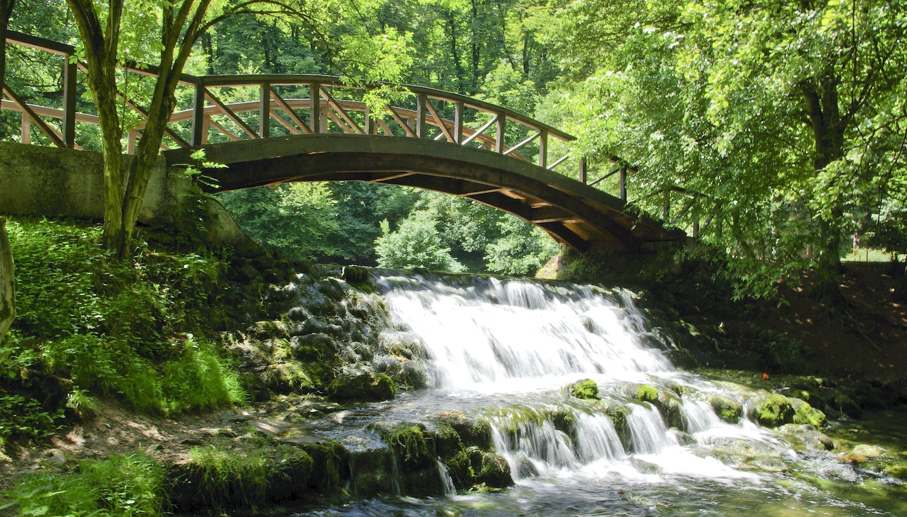
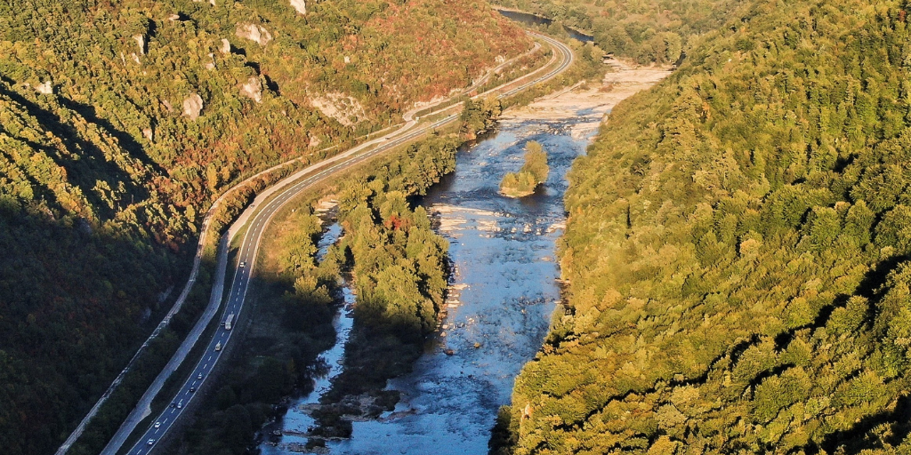
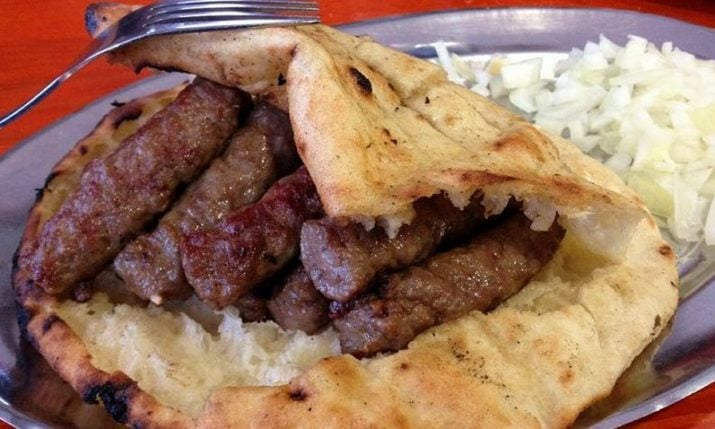

Bosna je prelepa država, Ima morje, Gore in gradbenike. Tukaj je par dejstev
ki povejo veliko o Bosni:
Velikost države
0
Število prebivalcev
0
Število gradbenikov
0
Število Bosancev izven bosne
0



Glavno mesto
Glavno mesto bosne je Sarajevo, mogoče ga poznate, kot čevabčenica
(najboljša v ljubljanni (če se ne strijaš jst in ti ob 3 na igrišcu)) Tukaj je par dejstev or tem
mestu
V njem živi 275k ljudi
Ima par gor v okolici
Blizu je morja se mi zdi
Će ne maraš čevapov mrš vn iz bosne...
Tukaj je video ki pove več o
sarajevemu
Prehrana
Posanci se se spomnili za eno tako enostavno, a tako okusno jed, Čevapi
Meso oblikovano v plačke, zraven ješ tudi lepinjo in kajmak, če si pravi bosance pa še prebranec.
Tukaj je par bosanskih jedi